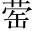
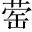
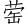

晉人歸楚公子谷臣與連尹襄老之屍於楚，以求知去聲。英。○宣公十二年，晉楚戰於邲，楚囚知。於是荀首佐中軍矣，故楚人許之。知莊子射楚連尹襄老，載其屍；射公子谷臣，囚之。以二者還。莊子，知。
王送知，曰：「子其怨我乎指久留於楚言。? 」對曰：「二國治戎，臣不才，不勝升。其任，以為俘孚。馘國。○俘馘，軍所虜獲者。系其人曰俘，截左耳曰馘。。執事不以釁欣去聲。鼓，使歸即戮，君之惠也以血塗鼓曰釁鼓，言楚不殺我而以其血塗鼓。即，就也。。臣實不才，又誰敢怨作自責語，撇開「怨」字。妙。? 」王曰：「然則德我乎指許歸於晉言。? 」對曰：「二國圖其社稷，而求紓其民晉、楚皆為社稷之謀，而欲紓緩其民。，各懲其忿，以相宥也各懲戒前日戰爭之忿，以相赦宥。。兩釋累囚，以成其好去聲。○累，系也。晉釋谷臣之囚，楚釋知。二國有好，臣不與之囚，以成其和好。及，其誰敢德去聲。? 」王曰：「子歸，何以報我作與己不相干語，撇開「德」字。妙。? 」對曰：「臣不任問得有意。受怨，君亦不任受德，無怨無德，不知所報平聲。。」王曰：「雖然，必告不穀言我未嘗有怨於君，君亦未嘗有德於我，有怨則報怨，有德則報德，我無怨而君無德，故不知所報也。○臣怨、君德，分貼得好。「不知」二字，更妙。。」對曰：「以君之靈，累臣得歸骨於晉，寡君之以為戮，死且不朽不穀，諸侯謙稱。言雖是如此，必告我以相報之事。○共王一團興致，被知。若從君惠而免之，以賜君之外臣首；首其請於寡君，而以戮於宗，亦死且不朽說得雪淡，無可奈何，又作此問。。若不獲命身雖死，而楚君之私恩不朽腐也。○客意。一層。，而使嗣宗職稱於異國曰外臣。首，荀首也。宗，荀氏之宗也。○客意。二層。○此雖二客意，然顯見晉之國法森然，家法森然。，次及於事若君不許戮。○轉入正意。，而帥使繼祖宗之職。偏師以修封疆以次及於軍旅之事。，雖遇執事，其弗敢違率。，其竭力致死，無有二心，以盡臣禮，所以報也其父為上軍佐，故曰帥偏師。修，治也。。」王曰：「晉未可與爭。」重為之禮而歸之雖遇楚之將帥，亦不敢違避。○一「敢」字，應上二「敢」字。。
玩篇首「於是荀首佐中軍矣，故楚人許之」二語，便見楚有不得不許之意。「德我」、「報我」，全是捉官路當私情也。楚王句句逼入，知句句撇開，末一段所對非所問，尤匪夷所思。